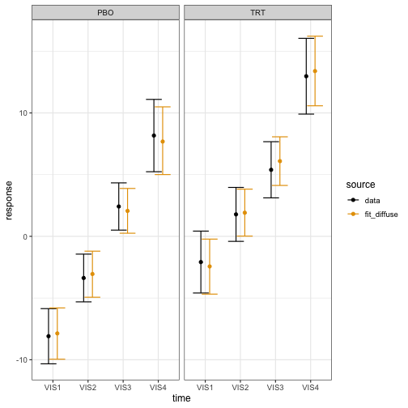
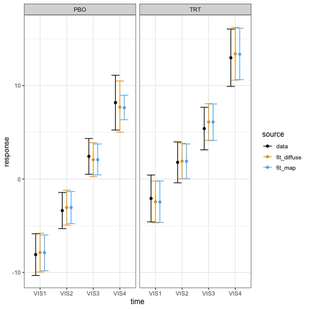

A meta-analytic predictive prior is a type of historical borrowing
approach that uses data from one or more previous studies to build a
prior distribution for parameters of interest in a new study (Spiegelhalter et al. (2004), Neuenschwander et al. (2010), Schmidli et al. (2014)). This vignette
demonstrates how to supply a meta-analytic predictive prior to a
Bayesian MMRM fitted with brms.mmrm.
Data of the current study
We use the FEV1 data from the mmrm package, which
contains simulated measurements of forced expiratory volume in 1 second
(FEV1) for virtual atients with chronic obstructive pulmonary disease
(COPD) at multiple visits.
set.seed(0L)
library(brms.mmrm)
library(dplyr)
library(ggplot2)
library(mmrm)
data(fev_data, package = "mmrm")
data_current <- fev_data |>
mutate(FEV1_CHG = FEV1 - FEV1_BL) |>
brm_data(
outcome = "FEV1_CHG",
group = "ARMCD",
time = "AVISIT",
patient = "USUBJID",
reference_group = "PBO"
) |>
brm_data_chronologize(order = "VISITN") |>
brm_archetype_effects(intercept = FALSE)
data_current
#> # A tibble: 800 × 19
#> x_PBO_VIS1 x_PBO_VIS2 x_PBO_VIS3 x_PBO_VIS4
#> * <int> <int> <int> <int>
#> 1 1 0 0 0
#> 2 0 1 0 0
#> 3 0 0 1 0
#> 4 0 0 0 1
#> 5 1 0 0 0
#> 6 0 1 0 0
#> 7 0 0 1 0
#> 8 0 0 0 1
#> 9 1 0 0 0
#> 10 0 1 0 0
#> # ℹ 790 more rows
#> # ℹ 15 more variables: x_TRT_VIS1 <int>,
#> # x_TRT_VIS2 <int>, x_TRT_VIS3 <int>,
#> # x_TRT_VIS4 <int>, USUBJID <fct>, AVISIT <ord>,
#> # ARMCD <fct>, RACE <fct>, SEX <fct>,
#> # FEV1_BL <dbl>, FEV1 <dbl>, WEIGHT <dbl>,
#> # VISITN <int>, VISITN2 <dbl>, FEV1_CHG <dbl>We are using a treatment effect informative prior archetype that
invites the user to specify an informative prior on the placebo group
mean at each study visit. For more details on informative prior
archetypes, see
vignette("archetypes", package = "brms.mmrm").
summary(data_current)
#> # This is the "effects" informative prior archetype in brms.mmrm.
#> # The following equations show the relationships between the
#> # marginal means (left-hand side) and important fixed effect parameters
#> # (right-hand side). Nuisance parameters are omitted.
#> #
#> # PBO:VIS1 = x_PBO_VIS1
#> # PBO:VIS2 = x_PBO_VIS2
#> # PBO:VIS3 = x_PBO_VIS3
#> # PBO:VIS4 = x_PBO_VIS4
#> # TRT:VIS1 = x_PBO_VIS1 + x_TRT_VIS1
#> # TRT:VIS2 = x_PBO_VIS2 + x_TRT_VIS2
#> # TRT:VIS3 = x_PBO_VIS3 + x_TRT_VIS3
#> # TRT:VIS4 = x_PBO_VIS4 + x_TRT_VIS4Benchmark analysis with a diffuse prior
As a basis for comparison, we first fit a Bayesian MMRM with a diffuse prior:
fit_diffuse <- brm_model(
data = data_current,
formula = brm_formula(data_current),
refresh = 0L
)The estimated marginal means closely match the analogous data summaries:
draws_diffuse <- brm_marginal_draws(fit_diffuse)
summaries_diffuse <- brm_marginal_summaries(draws_diffuse)
summaries_data <- brm_marginal_data(data_current)
colors <- c(
data = "#000000",
fit_diffuse = "#E69F00",
fit_map = "#56B4E9"
)
brm_plot_compare(data = summaries_data, fit_diffuse = summaries_diffuse) +
scale_color_manual(values = colors) +
theme_bw(12)
Suppose the trial is designed to declare efficacy if the posterior probability of observing a treatment effect at visit 4 () of at least 4 units of FEV1 is at least 85%:
The posterior probability undershoots the efficacy threshold, which is unsurprising because the dataset has few patients and MMRMs with diffuse priors are weak.
draws_diffuse |>
brm_marginal_probabilities(direction = "greater", threshold = 4) |>
filter(time == "VIS4") |>
pull(value)
#> [1] 0.806Constructing the robust MAP prior
Suppose we have a wealth of historical summary-level placebo data on FEV1 at visit 4 in similar studies:
data_historical_visit4 <- tibble::tribble(
~study , ~mean , ~sd , ~patients ,
"study1" , 8.16 , 10.01 , 437 ,
"study2" , 8.45 , 9.87 , 558 ,
"study3" , 7.34 , 12.33 , 489 ,
"study4" , 6.87 , 14.44 , 320 ,
"study5" , 7.00 , 12.07 , 491 ,
"study6" , 7.10 , 11.11 , 574
) |>
mutate(se = sd / sqrt(patients))Soon, we will make use of the pooled mean and standard deviation of this external data:
pooled_external_data_mean <- sum(data_historical_visit4$mean * data_historical_visit4$patients) /
sum(data_historical_visit4$patients)
pooled_external_data_sd <- sum(data_historical_visit4$sd^2 * data_historical_visit4$patients) /
sum(data_historical_visit4$patients) |>
sqrt()We use gMAP() from RBesT to fit this
summary data with a meta-analytic predictive model, then
automixfit() to approximate the MAP posterior as a mixture
of normals, and finally robustify() to add a weakly
informative component that protects against prior-data conflict (Schmidli et al. (2014)). This robustified MAP
posterior will serve as the MAP prior for the Bayesian MMRM
downstream.1
map_mcmc <- RBesT::gMAP(
cbind(mean, se) ~ 1 | study,
data = data_historical_visit4,
family = gaussian,
# See https://opensource.nibr.com/RBesT/reference/gMAP.html#details to set priors.
tau.dist = "HalfNormal",
tau.prior = pooled_external_data_sd / 4,
beta.prior = cbind(0, 100)
)
map_mixture <- RBesT::automixfit(map_mcmc)
map_robust <- RBesT::robustify(
map_mixture,
weight = 0.2,
mean = pooled_external_data_mean,
sigma = pooled_external_data_sd
)
map_robust
#> Univariate normal mixture
#> Mixture Components:
#> comp1 comp2 comp3 robust
#> w 4.451438e-01 3.291704e-01 2.568579e-02 2.000000e-01
#> m 7.618285e+00 7.524934e+00 8.572269e+00 7.522161e+00
#> s 4.222427e-01 1.104931e+00 3.146753e+00 7.124200e+03Converting the prior for use in brms.mmrm
We assign robust MAP prior to the placebo group mean at visit 4:2
prior <- brm_prior_label(
code = "mixnorm(map_w, map_m, map_s)",
group = "PBO",
time = "VIS4"
) |>
brm_prior_archetype(archetype = data_current)
prior
#> b_x_PBO_VIS4 ~ mixnorm(map_w, map_m, map_s)We then use RBesT::mixstanvar() to tell the Stan code in
brms how to interpret mixnorm(). Below, the
name “map” has to align with the prefix “map” in the call to
mixnorm() above.3
stanvars <- RBesT::mixstanvar(map = map_robust)Fitting the Bayesian MMRM with the MAP prior
We simply plug prior and stanvars into the
call to brms.mmrm::brm_model():
fit_map <- brm_model(
data = data_current,
formula = brm_formula(data_current),
prior = prior,
stanvars = stanvars,
refresh = 0L
)The model with the MAP prior has a more precise estimate of the placebo group mean at the final visit.
draws_map <- brm_marginal_draws(fit_map)
summaries_map <- brm_marginal_summaries(draws_map)
brm_plot_compare(
data = summaries_data,
fit_diffuse = summaries_diffuse,
fit_map = summaries_map
) +
scale_color_manual(values = colors) +
theme_bw(12)
With this added precision, we meet the efficacy threshold:
draws_map |>
brm_marginal_probabilities(direction = "greater", threshold = 4) |>
filter(time == "VIS4") |>
pull(value)
#> [1] 0.865In other trials, the MAP prior may have the opposite effect. To avoid human decision-making bias, it is important to pre-specify the analysis model used to evaluate the efficacy rule.
Multivariate mixture priors
For a multivariate mixture prior with correlated model coefficients,
we can use mixmvnorm() in the prior
specification and mixstanvar() to convert the mixture for
use in brms.mmrm. Not all multivariate mixture priors are
MAP priors, but you can translate a pre-computed MAP prior into the
mixmvnorm() format as shown below.
Specifying a known prior
First, we specify the distributional family of the prior for
brms:
prior <- brms::prior(
"mixmvnorm(prior_w, prior_m, prior_sigma_L)",
class = "b",
dpar = ""
)Before we construct the mixture prior, we need to note the order of
the model coefficients in brms. From
brms::prior_summary(), we see that the model coefficients
are ordered first by study arm, then by study visit. This is the order
we will use for the components of the mean and covariance of the
multivariate normal mixture components.
brms::prior_summary(fit_diffuse)
#> prior class coef group resp
#> (flat) b
#> (flat) b x_PBO_VIS1
#> (flat) b x_PBO_VIS2
#> (flat) b x_PBO_VIS3
#> (flat) b x_PBO_VIS4
#> (flat) b x_TRT_VIS1
#> (flat) b x_TRT_VIS2
#> (flat) b x_TRT_VIS3
#> (flat) b x_TRT_VIS4
#> (flat) b
#> (flat) b AVISITVIS1
#> (flat) b AVISITVIS2
#> (flat) b AVISITVIS3
#> (flat) b AVISITVIS4
#> lkj_corr_cholesky(1) Lcortime
#> dpar nlpar lb ub tag source
#> default
#> (vectorized)
#> (vectorized)
#> (vectorized)
#> (vectorized)
#> (vectorized)
#> (vectorized)
#> (vectorized)
#> (vectorized)
#> sigma default
#> sigma (vectorized)
#> sigma (vectorized)
#> sigma (vectorized)
#> sigma (vectorized)
#> defaultWe assume a rigorous process of evidence synthesis estimated the following marginal means for the placebo group. We also include vague treatment effects for the active treatment group. We will use this mean vector for both components of the mixture prior.
mean_mixture <- c(
5, # x_PBO_VIS1
7, # x_PBO_VIS2
8, # x_PBO_VIS3
9, # x_PBO_VIS4
0, # x_TRT_VIS1
0, # x_TRT_VIS2
0, # x_TRT_VIS3
0 # x_TRT_VIS4
)Similarly, we posit a block-diagonal covariance matrix with independent study arms and a diffuse block for the treatment arm.
# Block-diagonal covariance:
# correlated control block, vague diagonal treatment block.
covariance_control <- matrix(
rbind(
c(4, 2, 1, 1),
c(2, 4, 2, 1),
c(1, 2, 4, 2),
c(1, 1, 2, 9)
),
nrow = 4
)
covariance_informative <- matrix(0, 8, 8)
covariance_informative[1:4, 1:4] <- covariance_control
covariance_informative[5:8, 5:8] <- diag(rep(64, 4))To help prevent prior-data conflict, we add a robust mixture component. Ordinarily, the variance of a robust MAP component is proportional to the pooled patient-level variance from historical data. Since formal evidence synthesis is outside the scope of this section, we simply borrow from the diffuse block (i.e. the treatment arm) of the covariance above.
mean_robust <- mean_mixture
covariance_robust <- diag(rep(64, 8))
# Each mixture component is a vector with the
# weight, mean vector, and covariance matrix elements all inline.
multivariate_mixture <- RBesT::mixmvnorm(
informative = c(0.8, mean_mixture, covariance_informative),
robust = c(0.2, mean_robust, covariance_robust)
)We then translate the multivariate mixture into a format that
brms can use:
stanvars <- RBesT::mixstanvar(prior = multivariate_mixture)Finally, we fit the model:
fit_multivariate_mixture <- brm_model(
data = data_current,
formula = brm_formula(data_current),
prior = prior,
stanvars = stanvars,
refresh = 0L
)